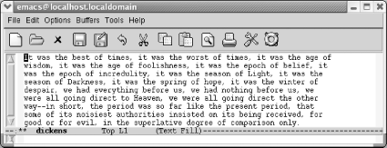
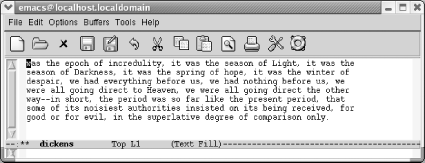
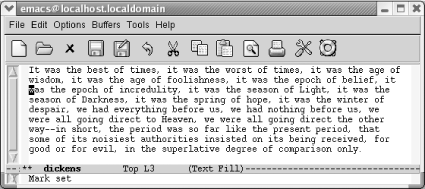

{% include JB/setup %}
{% raw %}
<div>
<div class="book" xml:lang="en"><div class="book"><div class="book"><div class="book"><h1 class="title"><a id="gnu3-CHP-2-SECT-2" class="calibre1"></a>Deleting Text</h1></div></div></div><p class="copyright">Before you start practicing deletion
<a id="gnu3-CHP-2-ITERM-1697" class="calibre2"></a>
            <a id="gnu3-CHP-2-ITERM-1698" class="calibre2"></a>commands,
you might want to know the undo command, which is discussed fully
later in this chapter. Typing <span><strong class="calibre5">C-_</strong></span> or
<span><strong class="calibre5">C-x u</strong></span> undoes your last edit; typing
<span><strong class="calibre5">undo</strong></span> again undoes the edit before
that one, and so on.</p><p class="copyright">Emacs provides many ways to delete text. The simplest way to delete
text is to press the <span><strong class="calibre5">Del</strong></span> key, which
deletes the character immediately to the left of the cursor. See
<a class="calibre2" href="ch02.html#gnu3-CHP-2-FIG-4" title="Figure 2-4. Emacs commands and your keyboard">Figure 2-4</a> for possible locations of the <span><strong class="calibre5">Del</strong></span> key on your keyboard. It is sometimes
referred to as the <span><strong class="calibre5">Backspace</strong></span> key.
<span><strong class="calibre5">Del</strong></span> is easiest to define by what it
does: it deletes the previous character. If you're
typing and you decide to erase the last character you typed, what key
do you reach for? That's the key Emacs refers to as
<span><strong class="calibre5">Del</strong></span>.</p><p class="copyright">Emacs provides a number of other deletion commands—perhaps too
many for your taste, although you'll eventually find
a reason to use most of them. For example, <span><strong class="calibre5">C-d</strong></span> (for <span><strong class="calibre5">delete-character</strong></span>) deletes the character under
the cursor. The command for deleting the next word is <span><strong class="calibre5">M-d</strong></span> (for <span><strong class="calibre5">kill-word</strong></span>). Once again, note how the <span><strong class="calibre5">Meta</strong></span> key augments the command: <span><strong class="calibre5">C-d</strong></span> operates on a character, and <span><strong class="calibre5">M-d</strong></span> operates on a word.</p><p class="copyright">Emacs has commands to delete
<a id="gnu3-CHP-2-ITERM-1699" class="calibre2"></a>
            <a id="gnu3-CHP-2-ITERM-1700" class="calibre2"></a>the next or previous word, sentence, and
paragraph. By their names, you can guess what they do when
you're between words, sentences, or paragraphs. If
you're in the middle of an entity, however, they do
something a little surprising: they delete a portion of the current
word, sentence, or paragraph, backward or forward depending on
whether the command deletes previous or next. For example,
here's how <span><strong class="calibre5">M-d</strong></span> acts
differently depending on where the cursor is.</p><div class="book"><a id="ch02-4-fm2xml" class="calibre2"></a><table class="calibre8"><colgroup class="calibre9"><col class="calibre10"/><col class="calibre10"/></colgroup><thead class="calibre11"><tr class="calibre12"><th class="calibre13">
                        <p class="copyright">
                           <span><strong class="calibre5">If the cursor is here</strong></span>:</p>
                     </th><th class="calibre14">
                        <p class="copyright">
                           <span><strong class="calibre5">M-d makes this edit</strong></span>:</p>
                     </th></tr></thead><tbody class="calibre15"><tr class="calibre12"><td class="calibre16">
                        <a id="I_2_tt33" class="calibre2"></a><pre class="programlisting">It was the w<span>o</span>rst of times</pre>
                     </td><td class="calibre17">
                        <a id="I_2_tt34" class="calibre2"></a><pre class="programlisting">It was the w of times</pre>
                     </td></tr><tr class="calibre12"><td class="calibre16">
                        <a id="I_2_tt35" class="calibre2"></a><pre class="programlisting">It was the <span>w</span>orst of times</pre>
                     </td><td class="calibre17">
                        <a id="I_2_tt36" class="calibre2"></a><pre class="programlisting">It was the of times</pre>
                     </td></tr><tr class="calibre12"><td class="calibre18">
                        <a id="I_2_tt37" class="calibre2"></a><pre class="programlisting">It was the wors<span>t</span> of times</pre>
                     </td><td class="calibre19">
                        <a id="I_2_tt38" class="calibre2"></a><pre class="programlisting">It was the wors of times</pre>
                     </td></tr></tbody></table></div><p class="copyright">Similarly, if you are in the
<a id="gnu3-CHP-2-ITERM-1701" class="calibre2"></a>
            <a id="gnu3-CHP-2-ITERM-1702" class="calibre2"></a>
            <a id="gnu3-CHP-2-ITERM-1703" class="calibre2"></a>middle of a word and ask Emacs to
delete the previous word (<span><strong class="calibre5">M-Del</strong></span>, for
<span><strong class="calibre5">backward-kill-word</strong></span>), it deletes from
the cursor position back to the beginning of the current word.</p><p class="copyright">If you want to delete an entire line or part of a line, use the
command <span><strong class="calibre5">C-k</strong></span> (for <span><strong class="calibre5">kill-line</strong></span>). This command deletes everything
from the cursor to the end of the line. Typing <span><strong class="calibre5">C-k</strong></span> on a blank line deletes the line itself.
So, it usually takes two <span><strong class="calibre5">C-k</strong></span>'s to delete a line: one
to delete the text and one to delete the resulting blank line. If you
want to delete everything from the beginning of the line up to the
cursor, try the more complex incantation <span><strong class="calibre5">Meta -
C-k</strong></span> (i.e., hold down <span><strong class="calibre5">Meta</strong></span>, followed by a hyphen, and then <span><strong class="calibre5">C-k</strong></span>).</p><p class="copyright">You can also use <span><strong class="calibre5">C-k</strong></span> to join two
lines. If you're at the end of a line, <span><strong class="calibre5">C-k</strong></span> deletes the newline character, effectively
making two lines into one long line.</p><div class="book" xml:lang="en"><div class="book"><div class="book"><div class="book"><h2 class="title1"><a id="gnu3-CHP-2-SECT-2.1" class="calibre1"></a>The Kill Ring</h2></div></div></div><p class="copyright">By now you may have noticed that <a id="gnu3-CHP-2-ITERM-1704" class="calibre2"></a>
               <a id="gnu3-CHP-2-ITERM-1705" class="calibre2"></a>some deletion commands in Emacs are
called <span><em class="calibre7">kill</em></span> commands, such as <span><strong class="calibre5">kill-region</strong></span>, <span><strong class="calibre5">kill-word</strong></span>, and the like. In Emacs, killing is
not fatal, but in fact, quite the opposite. Text that has been killed
is not gone forever but is hidden in an area called the
<span><em class="calibre7">kill ring</em></span>. The kill ring, though it sounds
somewhat like a violent gang, is an internal storage area where Emacs
puts things you've copied or deleted. Do not confuse
the kill ring with the system clipboard, which allows for copying and
pasting between applications. We'll cover how Emacs
relates to the system clipboard later in this chapter.</p><p class="copyright">You can get back what you've deleted by typing
<span><strong class="calibre5">C-y</strong></span> (for <span><strong class="calibre5">yank</strong></span>).<sup class="calibre6">[<a id="gnu3-CHP-2-FNOTE-3" href="#ftn.gnu3-CHP-2-FNOTE-3" class="calibre2">3</a>]</sup> Conveniently, if you kill several lines in succession,
Emacs collects them into a single item and places the whole unit into
the kill ring; a single <span><strong class="calibre5">C-y</strong></span> command
will bring everything back. In the following example,
we'll use <span><strong class="calibre5">C-k</strong></span> four
times to delete the first two lines of <span><em class="calibre7">A Tale of Two
Cities</em></span>. (Remember: the first <span><strong class="calibre5">C-k</strong></span> deletes the text; the second <span><strong class="calibre5">C-k</strong></span> deletes the remaining blank line.) Then
we'll use a single <span><strong class="calibre5">C-y</strong></span> to bring everything back.</p><div class="book"><a id="ch02-5-fm2xml" class="calibre2"></a><table class="calibre8"><colgroup class="calibre9"><col class="calibre10"/></colgroup><tbody class="calibre15"><tr class="calibre12"><td class="calibre17">
                           <p class="copyright">Initial state:</p>
                        </td></tr><tr class="calibre12"><td class="calibre17">
                           <p class="copyright">
                              </p><div class="book"><div class="mediaobject"><a id="I_2_tt39" class="calibre2"></a></div></div><p class="copyright">
                           </p>
                        </td></tr><tr class="calibre12"><td class="calibre19">
                           <p class="copyright">The cursor is in upper-left corner.</p>
                        </td></tr></tbody></table></div><div class="book"><a id="ch02-6-fm2xml" class="calibre2"></a><table class="calibre8"><colgroup class="calibre9"><col class="calibre10"/></colgroup><tbody class="calibre15"><tr class="calibre12"><td class="calibre17">
                           <p class="copyright">Type: <span><strong class="calibre5">C-k C-k C-k C-k</strong></span>
                           </p>
                        </td></tr><tr class="calibre12"><td class="calibre17">
                           <p class="copyright">
                              </p><div class="book"><div class="mediaobject"><a id="I_2_tt40" class="calibre2"></a></div></div><p class="copyright">
                           </p>
                        </td></tr><tr class="calibre12"><td class="calibre19">
                           <p class="copyright">You have deleted the first two lines with <span><strong class="calibre5">C-k</strong></span>.</p>
                        </td></tr></tbody></table></div><div class="book"><a id="ch02-7-fm2xml" class="calibre2"></a><table class="calibre8"><colgroup class="calibre9"><col class="calibre10"/></colgroup><tbody class="calibre15"><tr class="calibre12"><td class="calibre17">
                           <p class="copyright">Type: <span><strong class="calibre5">C-y</strong></span>
                           </p>
                        </td></tr><tr class="calibre12"><td class="calibre17">
                           <p class="copyright">
                              </p><div class="book"><div class="mediaobject"><a id="I_2_tt41" class="calibre2"></a></div></div><p class="copyright">
                           </p>
                        </td></tr><tr class="calibre12"><td class="calibre19">
                           <p class="copyright">You got everything back with a single command.</p>
                        </td></tr></tbody></table></div><p class="copyright">What exactly goes <a id="gnu3-CHP-2-ITERM-1706" class="calibre2"></a>
               <a id="gnu3-CHP-2-ITERM-1707" class="calibre2"></a>into the kill ring? Everything you
delete with <span><strong class="calibre5">C-k</strong></span> in addition to
everything you delete with <span><strong class="calibre5">C-w</strong></span> and
everything you copy with <span><strong class="calibre5">M-w</strong></span> (two
commands that you'll learn shortly) go into the kill
ring. Words, sentences, and paragraphs that you delete with <span><strong class="calibre5">M-d</strong></span>, <span><strong class="calibre5">M-Del</strong></span>,
and their relatives also go into the kill ring. In addition, text
that you delete with <span><strong class="calibre5">C-u</strong></span> followed by
either <span><strong class="calibre5">Del</strong></span> or <span><strong class="calibre5">C-d</strong></span> goes into the kill ring. About the only
thing that Emacs doesn't save in the kill ring is
single characters, deleted with <span><strong class="calibre5">Del</strong></span>
or <span><strong class="calibre5">C-d</strong></span>. (If you need to, you can get
this type of deletion back using the <span><strong class="calibre5">undo</strong></span> command, bound to both <span><strong class="calibre5">C- _</strong></span> and <span><strong class="calibre5">C-x
u</strong></span>.)</p><p class="copyright">Emacs is clever about what it puts into the kill ring: when it is
assembling a big block of text from a group of deletions, it always
assembles the text correctly. For example, you can type a few
<span><strong class="calibre5">M-d</strong></span>'s, followed by
some <span><strong class="calibre5">M-Del</strong></span>'s, with
a couple of <span><strong class="calibre5">C-k</strong></span>'s
thrown in. When you type <span><strong class="calibre5">C-y</strong></span>, Emacs
yanks all the text that you've deleted in the proper
order.</p><p class="copyright">However, there's one thing you have to watch out
for. Emacs stops assembling these blocks of text as soon as you give
any command that <span><em class="calibre7">isn't</em></span> a kill
command. For example, if you type <span><strong class="calibre5">C-k</strong></span>, then delete a single character with
<span><strong class="calibre5">C-d</strong></span>, then type another <span><strong class="calibre5">C-k</strong></span>, you've broken the chain.
Emacs doesn't consider deletion of a single
character with <span><strong class="calibre5">C-d</strong></span> a
"kill" command;
it's just a deletion and it isn't
stored. In this case, you haven't made a single
chain of kill commands; you've made two chains.
Later, we'll see how to get the older killed text
back.</p><p class="copyright">
               <a class="calibre2" href="ch02s02.html#gnu3-CHP-2-TABLE-3" title="Table 2-3. Deletion commands">Table 2-3</a> summarizes the commands for
<a id="gnu3-CHP-2-ITERM-1708" class="calibre2"></a>
               <a id="gnu3-CHP-2-ITERM-1709" class="calibre2"></a>
               <a id="gnu3-CHP-2-ITERM-1710" class="calibre2"></a>
               <a id="gnu3-CHP-2-ITERM-1711" class="calibre2"></a>
               <a id="gnu3-CHP-2-ITERM-1712" class="calibre2"></a>
               <a id="gnu3-CHP-2-ITERM-1713" class="calibre2"></a>deleting, killing, and yanking text,
including options from the <span><strong class="calibre5">Edit</strong></span>
menu.</p><div class="book"><a id="gnu3-CHP-2-TABLE-3" class="calibre2"></a><p class="title2"><b class="calibre25">Table 2-3. Deletion commands</b></p><div class="table-contents"><table summary="Deletion commands" class="calibre8"><colgroup class="calibre9"><col class="calibre10"/><col class="calibre10"/><col class="calibre10"/></colgroup><thead class="calibre11"><tr class="calibre12"><th class="calibre26">
                           <p class="copyright">Keystrokes</p>
                        </th><th class="calibre26">
                           <p class="copyright">Command name</p>
                        </th><th class="calibre27">
                           <p class="copyright">Action</p>
                        </th></tr></thead><tbody class="calibre15"><tr class="calibre12"><td class="calibre28">
                           <p class="copyright">
                              <span><strong class="calibre5">C-d</strong></span>
                           </p>
                        </td><td class="calibre28">
                           <p class="copyright">
                              <span><strong class="calibre5">delete-char</strong></span>
                           </p>
                        </td><td class="calibre29">
                           <p class="copyright">Delete character under cursor.</p>
                        </td></tr><tr class="calibre12"><td class="calibre28">
                           <p class="copyright">
                              <span><strong class="calibre5">Del</strong></span>
                           </p>
                        </td><td class="calibre28">
                           <p class="copyright">
                              <span><strong class="calibre5">delete-backward-char</strong></span>
                           </p>
                        </td><td class="calibre29">
                           <p class="copyright">Delete previous character.</p>
                        </td></tr><tr class="calibre12"><td class="calibre28">
                           <p class="copyright">
                              <span><strong class="calibre5">M-d</strong></span>
                           </p>
                        </td><td class="calibre28">
                           <p class="copyright">
                              <span><strong class="calibre5">kill-word</strong></span>
                           </p>
                        </td><td class="calibre29">
                           <p class="copyright">Delete next word.</p>
                        </td></tr><tr class="calibre12"><td class="calibre28">
                           <p class="copyright">
                              <span><strong class="calibre5">M-Del</strong></span>
                           </p>
                        </td><td class="calibre28">
                           <p class="copyright">
                              <span><strong class="calibre5">backward-kill-word</strong></span>
                           </p>
                        </td><td class="calibre29">
                           <p class="copyright">Delete previous word.</p>
                        </td></tr><tr class="calibre12"><td class="calibre28">
                           <p class="copyright">
                              <span><strong class="calibre5">C-k</strong></span>
                           </p>
                        </td><td class="calibre28">
                           <p class="copyright">
                              <span><strong class="calibre5">kill-line</strong></span>
                           </p>
                        </td><td class="calibre29">
                           <p class="copyright">Delete from cursor to end of line.</p>
                        </td></tr><tr class="calibre12"><td class="calibre28">
                           <p class="copyright">
                              <span><strong class="calibre5">M-k</strong></span>
                           </p>
                        </td><td class="calibre28">
                           <p class="copyright">
                              <span><strong class="calibre5">kill-sentence</strong></span>
                           </p>
                        </td><td class="calibre29">
                           <p class="copyright">Delete next sentence.</p>
                        </td></tr><tr class="calibre12"><td class="calibre28">
                           <p class="copyright">
                              <span><strong class="calibre5">C-x Del</strong></span>
                           </p>
                        </td><td class="calibre28">
                           <p class="copyright">
                              <span><strong class="calibre5">backward-kill-sentence</strong></span>
                           </p>
                        </td><td class="calibre29">
                           <p class="copyright">Delete previous sentence.</p>
                        </td></tr><tr class="calibre12"><td class="calibre28">
                           <p class="copyright">
                              <span><strong class="calibre5">C-y</strong></span>
                           </p>
                        </td><td class="calibre28">
                           <p class="copyright">
                              <span><strong class="calibre5">yank</strong></span>
                           </p>
                        </td><td class="calibre29">
                           <p class="copyright">Restore what you've deleted.</p>
                        </td></tr><tr class="calibre12"><td class="calibre28">
                           <p class="copyright">
                              <span><strong class="calibre5">C-w</strong></span>
                              <span><em class="calibre7">Edit</em></span>
                              <span>→</span> 
                              <span><em class="calibre7">Cut</em></span>
                           </p>
                        </td><td class="calibre28">
                           <p class="copyright">
                              <span><strong class="calibre5">kill-region</strong></span>
                           </p>
                        </td><td class="calibre29">
                           <p class="copyright">Delete a marked region (see next section).</p>
                        </td></tr><tr class="calibre12"><td class="calibre28">
                           <p class="copyright">(<span><em class="calibre7">none</em></span>)</p>
                        </td><td class="calibre28">
                           <p class="copyright">
                              <span><strong class="calibre5">kill-paragraph</strong></span>
                           </p>
                        </td><td class="calibre29">
                           <p class="copyright">Delete next paragraph.</p>
                        </td></tr><tr class="calibre12"><td class="calibre30">
                           <p class="copyright">(<span><em class="calibre7">none</em></span>)</p>
                        </td><td class="calibre30">
                           <p class="copyright">
                              <span><strong class="calibre5">backward-kill-paragraph</strong></span>
                           </p>
                        </td><td class="calibre31">
                           <p class="copyright">Delete previous paragraph.</p>
                        </td></tr></tbody></table></div></div><br class="book"/></div><div class="book"><br class="book"/><hr class="calibre4"/><div class="book"><p class="copyright"><sup class="calibre6">[<a id="ftn.gnu3-CHP-2-FNOTE-3" href="#gnu3-CHP-2-FNOTE-3" class="calibre2">3</a>] </sup>You may be used to
pressing <span><strong class="calibre5">C-v</strong></span> to paste in all
applications if you are a Linux or Windows user. Emacs has options to
change its default paste, cut, and copy commands to the familiar C-v,
C-x, and C-c. See "Making Emacs Work the Way You
Want" for details. Also, a quick warning to
<span><strong class="calibre5">vi</strong></span> users who are learning Emacs:
<span><strong class="calibre5">vi</strong></span> also uses the term
<span><em class="calibre7">yank</em></span>, but its meaning is almost the exact
opposite. Don't let this confuse you.</p></div></div></div></div>

{% endraw %}

